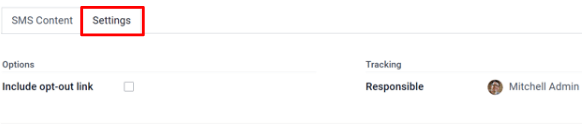

SMS essentials¶
Utilizing SMS outreach in communication strategies can help companies expand their market reach, especially in some countries, where emails might not be very common, or even used at all.
Odoo’s SMS Marketing application can also help boost conversion rates around valuable actions, such as event registrations, free trials, purchases, etc., since text and mobile-based marketing channels typically yield higher CTOR and CTR outcomes.
SMS marketing dashboard¶
When the application is opened, Odoo displays the main SMS Marketing dashboard, which showcases the various SMS mailings that have been created, along with pertinent information and data related to that specific message.
The Kanban view is the default Odoo uses when the application is opened, which provides an organized display of the SMS mailings that have been created, and what their current status is at the moment.
Note
An SMS mailing can have one of the following statuses: Draft, In Queue, Sending, or Sent.
In the upper right corner of the main SMS Marketing dashboard, there are a few different view options to choose from. Each one provides a unique take on the same SMS information.
The List view provides the same useful data related to SMS mailings, but in a more traditional list layout.
The Calendar view provides a simple calendar, making it easy to see when SMS mailings are going to be sent (or have been sent). If a future date is clicked, Odoo reveals a blank SMS template that, when completed, will be scheduled to be sent on that specific future date.
Lastly, the Graph view visualizes that same SMS-related data in series of graphs and charts. Odoo also provides various ways to sort and group the data for more detailed analysis.
Create SMS messages¶
To start, click Create on the main SMS Marketing dashboard, and Odoo reveals a blank SMS template form, which can be configured in a number of different ways.

First, give the mailing a Subject, which describes what the mailing is about.
Next, in the Recipients field, choose to whom this SMS will be sent. By default, Odoo has Mailing List selected. If this is the desired Recipients field option, specify which mailing list Odoo should send this SMS to in the Select Mailing List field.
Note
To create (or edit) a mailing list, go to . There, Odoo displays all previously created mailing lists, along with various types of data related to that specific list (e.g. number of contacts, mailings, recipients, etc.).
To learn more about mailing lists and contacts, check out Mailing lists and blacklists.

To reveal all the possible options in the Recipients field, click the field to see all the choices Odoo makes available.
When another field (other than Mailing List) is selected, the option to specify that chosen field even further becomes available — either with a default recipient filter equation that appears automatically (which can be customized to fit any business need), or, if no default recipient filter equation is present, an Add Filter button will appear.
Clicking the Add Filter button, reveals fully customizable domain rule fields, which can be configured similar to an equation. You can create multiple recipient rules, if necessary.
Then, Odoo will only send the SMS to recipients who fit into whatever criteria is configured in those fields. Multiple rules can be added.
Example
If Contact is chosen, all of the Contacts records in the Odoo database (vendors, customers, etc.) will receive the SMS, by default — unless more specific recipient rules are entered.
For instance, the message below will only be sent to contacts in the database that are located in
the United States (e.g. Country > Country Name equals United States), and they haven’t
blacklisted themselves from any mailings (e.g. Blacklist > is > not set).

Writing SMS messages¶
Enter the content of the SMS in the text field, found in the SMS Content tab. Links and emojis can also be included. Beneath the text field, Odoo displays how many characters are used in the message, along with how many SMS mailings it will take to deliver the complete message.
Tip
To check the price of sending an SMS for a country, click on the Information icon.

Note
Credits must be purchased from Odoo in order to take advantage of the SMS Marketing app; SMS messages will not be sent without credits.
See also
Track links used in SMS messages¶
When links are used in SMS messages, Odoo automatically generates link trackers to gather analytical data and metrics related to those specific links, which can be found by going to .
Adjust SMS settings¶
Under the Settings tab of the SMS template, there is an option to Include opt-out link. If activated, the recipient is able to unsubscribe from the mailing list, thus avoiding all future mailings.
An employee can be designated as the Responsible in the Tracking section of the Settings tab, as well.
Send SMS messages¶
Once a mailing is created, choose when Odoo should deliver the message from the following options:
Send: sends the message immediately. Consider using this option if the recipient list is highly refined, or in cases that involve fast approaching deadlines, such as a “flash sale.”
Schedule: choose a day (and time) for Odoo to send the mailing. This is typically the best option for mailings related to a specific event. Such a method can also be used to promote a limited-time offer, or to help plan a company’s content strategy in advance.
Test: allows for an SMS to be sent to one or multiple numbers for test purposes. Remember to use a comma between phone numbers if multiple numbers are used as recipients.
Visualize reports¶
On the Reporting page (accessible via the option in the header menu), there are options to apply different combinations of Filters and Measures to view metrics in a number of different layouts (e.g. Graph, List, and Cohort views.)
Each Reporting metric view option allows for more extensive performance analysis of SMS mailings.
For example, while in the default Graph view, SMS data is visualized as different graphs and charts, which can be sorted and grouped in various ways (e.g. Measures drop down menu).

Tip
SMS messages can be sent using automated actions in Odoo. Odoo Studio is required to use automated actions.
To install Odoo Studio, go to . Then, using the
Search… bar, and search for studio.
If it is not already installed, click Install.
Adding the Studio application upgrades the subscription status to Custom, which increases the cost. Consult support, or reach out to the database’s customer success manager, with any questions on upgrading.
To use automated actions, navigate in developer mode, to . Then, click New to create a new action.
Enter an Action Name, and select a Model to implement this action on.
Ensure the Active toggle is set to on, represented by a full-green switch, in order for the automated action to run.
Set the Trigger to either On Creation, On Update, On Creation & Update, On Deletion, Based on Form Modification, or Based on Timed Condition.
Based on the selection for the Trigger, additional fields may populate.
Under the Apply on field, a record filter using a domain can be created. Ensure a model has been selected before setting any domains on the Apply on field. Click Edit Domain to set record parameters.
Under Action To Do drop-down field, select Send SMS Text Message. Next, set the SMS Template, and choose whether the SMS message should be logged as a note, by ticking the checkbox next to Log as Note.

To implement the automated action, save it; either by navigating away, or manually saving it (using the ☁️ (cloud) icon).